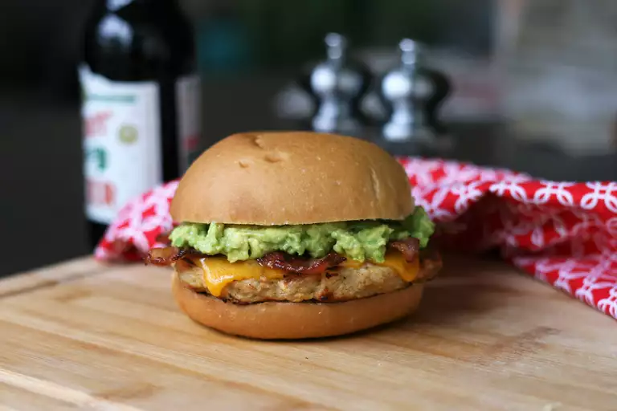

Chicken Burger

Ingredients:
- 1 cup bread crumbs
- ¼ cup minced onion
- 2 cloves garlic, minced
- 2 tablespoons grated Parmesan cheese
- 1 ½ teaspoons coarse sea salt, or to taste
- ½ teaspoon ground paprika
- ½ teaspoon freshly ground black pepper
- ¼ teaspoon cayenne pepper (Optional)
- 1 pound ground chicken
- 1 large egg
Direction
- Preheat an outdoor grill for medium heat and lightly oil the grate.
- Place bread crumbs, onion, garlic, Parmesan cheese, salt, paprika, black pepper, and cayenne pepper into the bowl of a food processor; pulse until blended.
- Combine chicken, egg, and bread crumb mixture in a large bowl until evenly mixed. Divide and shape mixture into 4 equal patties. Place on a cookie sheet and cover with aluminum foil. Refrigerate for 5 to 10 minutes.
- Cook patties on the preheated grill until cooked through, at least 7 minutes per side. An instant-read thermometer inserted into the center of the patties should read at least 165 degrees F (74 degrees C).
back to homepage